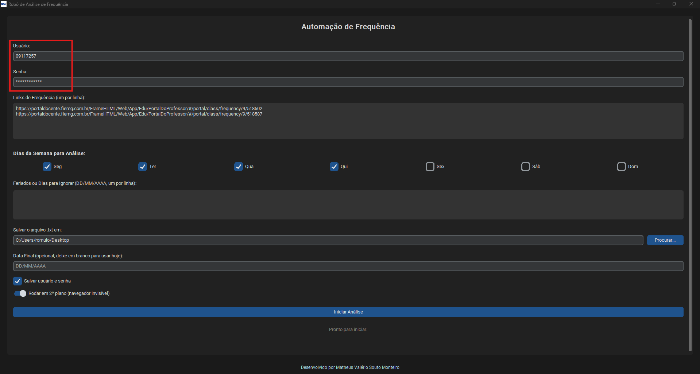
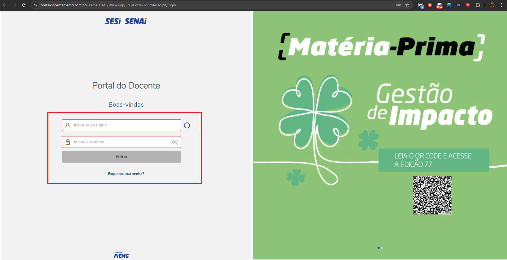
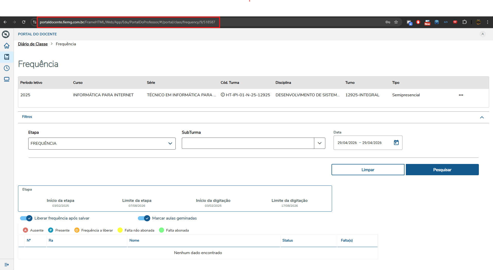
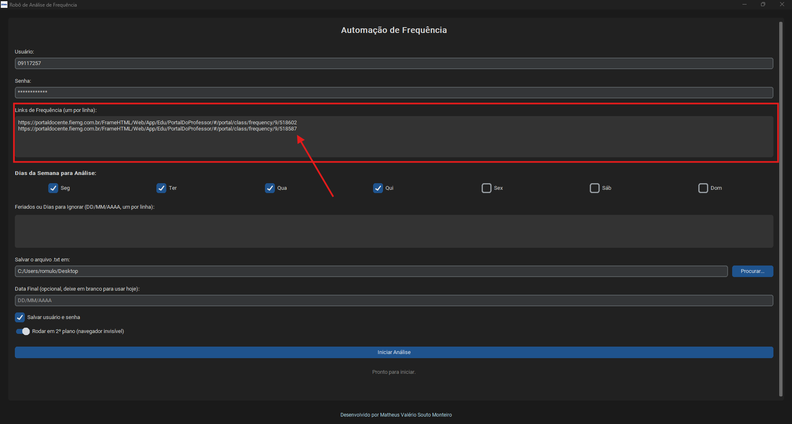
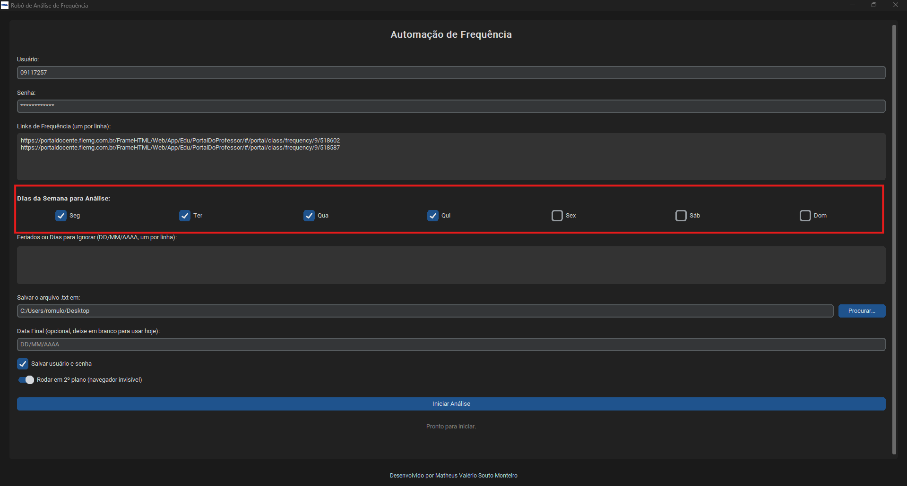
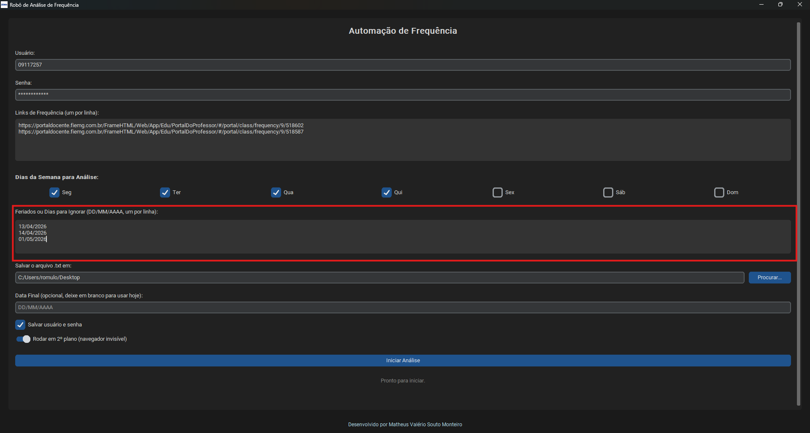
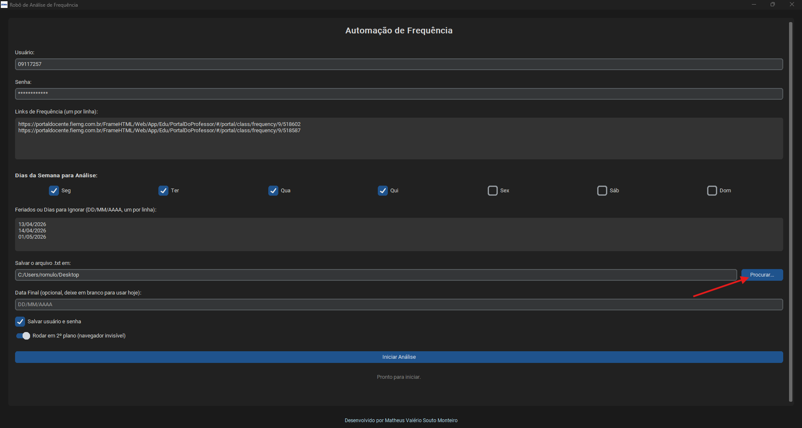
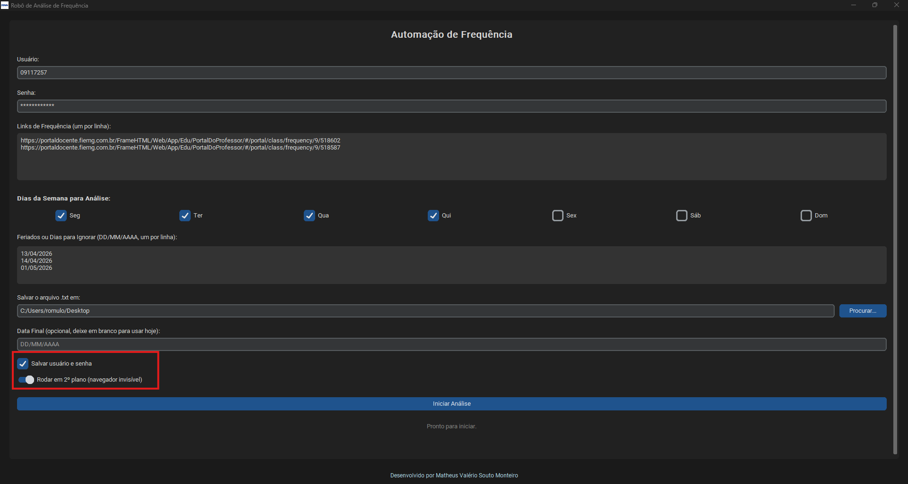
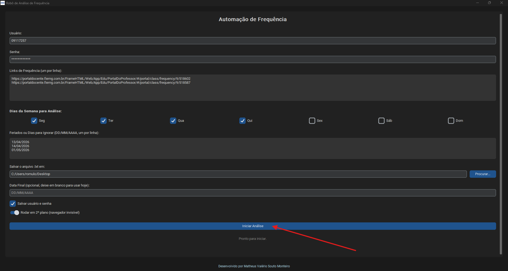
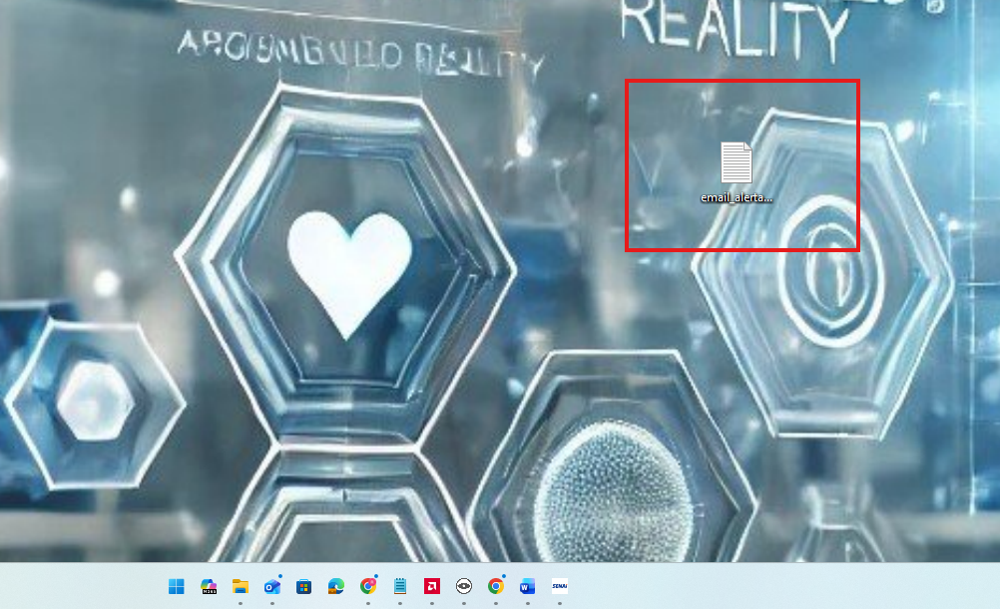

Escolher outro problema ou tutorial
Como utilizar o Robô de Análise de Frequência
Página de solução — Automação de frequência
Baixar aplicativo do robô
Use o botão abaixo para baixar o aplicativo do Robô de Análise de Frequência.
Baixar aplicativoComo resolver
- Abra o Robô de Análise de Frequência.
- Informe o usuário e a senha do Portal do Docente.
- Acesse a tela de frequência da turma desejada e copie o link da página de frequência.
- Cole no robô os links de frequência, colocando um link por linha.
- Marque os dias da semana que devem ser considerados na análise.
- Informe feriados ou dias que devem ser ignorados, usando o formato DD/MM/AAAA, um por linha.
- Escolha a pasta em que o arquivo email_alerta_faltas.txt será salvo.
- Clique em Iniciar Análise e aguarde o processamento.
Observações
- O campo de links aceita mais de uma turma, desde que cada link esteja em uma linha separada.
- A análise sinaliza alunos com 2 ou mais dias de faltas totais consecutivas.
- Quando a opção de rodar em segundo plano estiver ativada, o navegador fica invisível durante a execução.
Ilustração do processo
Passe o mouse sobre uma imagem para ampliá-la.

Imagem de referência do procedimento.

Imagem de referência do procedimento.

Imagem de referência do procedimento.

Imagem de referência do procedimento.

Imagem de referência do procedimento.

Imagem de referência do procedimento.

Imagem de referência do procedimento.

Imagem de referência do procedimento.

Imagem de referência do procedimento.

Imagem de referência do procedimento.
Quando chamar suporte
Acionar suporte se o robô não abrir, não conseguir acessar o Portal do Docente, não localizar a tabela de frequência ou não gerar o arquivo TXT ao final da análise.